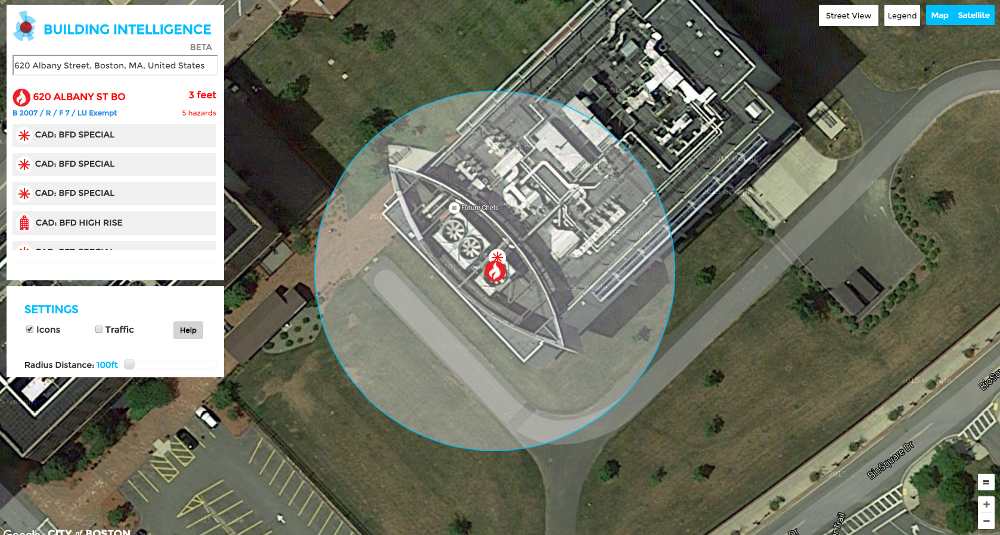
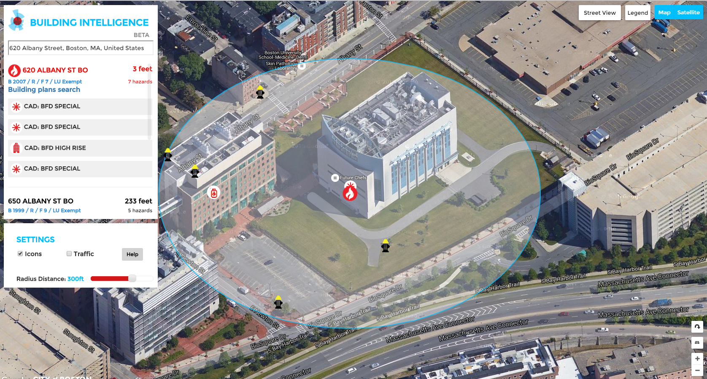
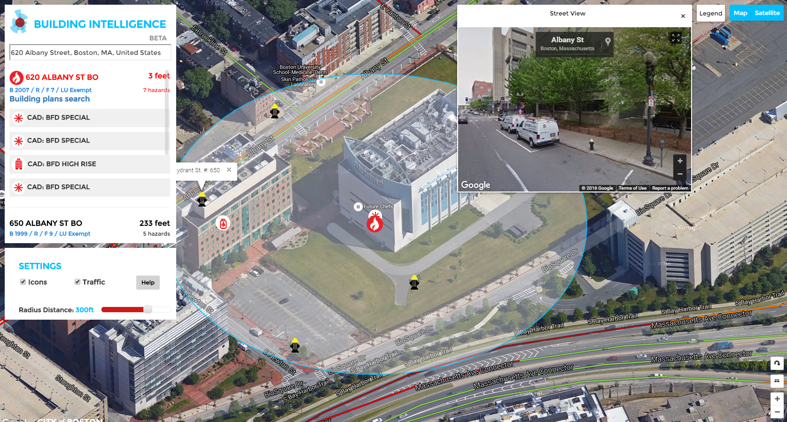
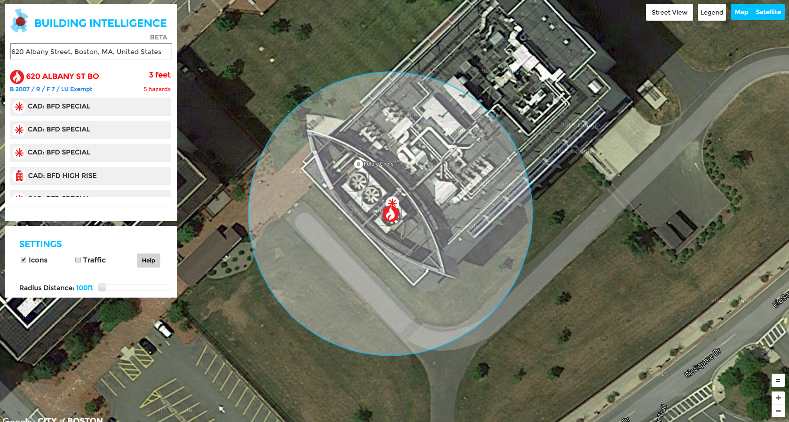
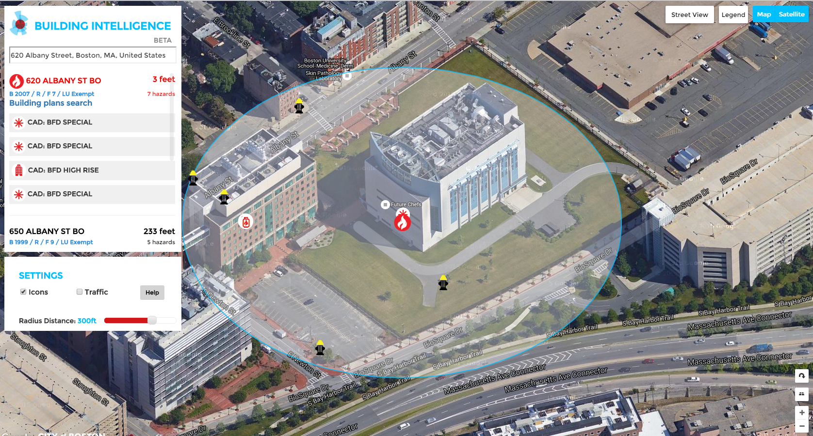
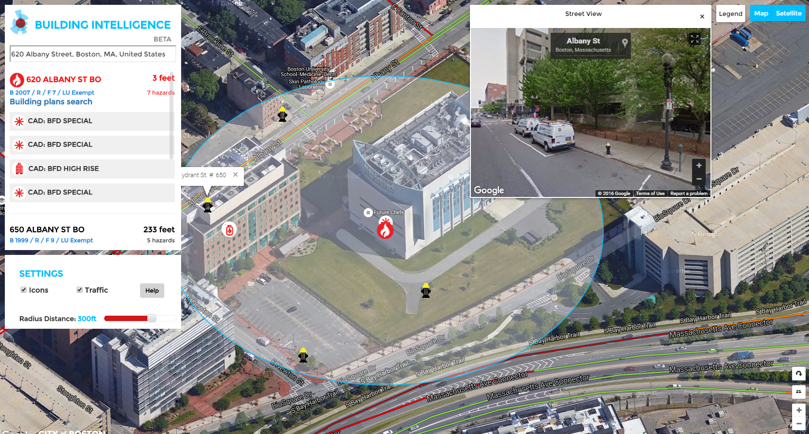

About: With Boston's Citywide Analytics Team, I led the Building Intelligence project for the Boston Fire Department. Building Intelligence is an application that alerts firefighters, en route to a fire, of potential hazards on site. Collecting data from three different departments and seven data sources, we wanted to create a comprehensive look at the dangers posed in each building of Boston. This included code violations, open permitting work, chemical hazards, biohazards, and building plans. The goal of the project is to protect Boston's firefighters from preventable injury and harm.
Skills: ArcGIS MapService API, Google Maps API
Data: Data from Inspectional Services, Fire Department, and Assessing Department
Press: Boston Globe


 







Back
About: Few people know that Los Angeles County has 228 community water systems. These systems are responsible for providing drinking water to LA County residents. To get a better understanding of this landscape, I worked with the Luskin Center to determine the boundaries of these agencies. The geographical data was featured in the Luskin Center’s report, Community Water Systems. Further digitizing the process, I created a web map of these boundaries alongside important figures such as: population age, meter usage, service connections, low-income households, and temperature increase. Ultimately, this report and application aims to provide policy makers a more comprehensive and integrated look at potable water in Los Angeles.
Skills: ArcGIS MapService API, Google Maps API, HighCharts API
Data: Data from Luskin Center Research
Press: Boston Globe
Back
About: Working the NYU's Steinhardt Institute and the New York Department of Education, this was a project to visualize the impact of Universal Pre-K in New York City. Mayor De Blasio's initiative to provide pre-k education to all children in the city New York City was the impetus behind this project entitled “Strengthening the Research Architecture for High Quality Universal Pre-K (UPK)”, led by Drs. Cybele Raver and Pamela Morris.
Skills: ArcGIS MapService API, Google Maps API, HighCharts API
Data: American Community Survey 2009-2013, NY Dept of Education Data 2014
Press: Boston Globe
Back
I am fascinated by cartographic representations of data and digital story-telling. I work to articulate complex subject matter through visualization methods –using statistical programming, data analysis, GIS mapping, and web design to communicate important data patterns through graphical representations. Particularly I am motivated by research relating to urban discussions for equitable community development, social justice, and sustainability.
When I am not making maps, I like to surf, hike, and watch the Oprah Winfrey Show. Also, I read mystery novels and practice my backstroke, reliving high school swim relay races, whenever I get the chance.